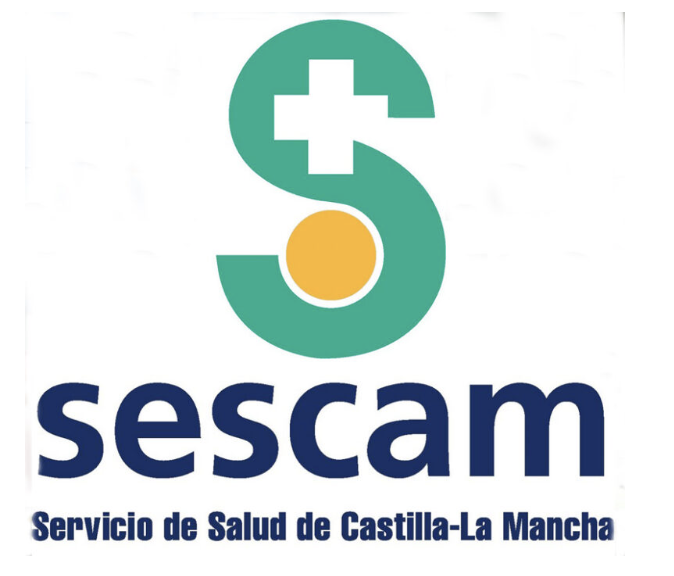

Organizado por
EVITANDO LA FRAGMENTACIÓN DE LA ATENCIÓN:
EL PROCESO DE LA TRANSICIÓN
"Actualización, reflexión crítica y continuidad de cuidados."
Esta actividad es una oportunidad de actualización y reflexión crítica, alineada con las prioridades actuales de la atención al paciente crítico y la continuidad de los cuidados.
"Actualización y reflexión crítica, alineada con las prioridades actuales de la atención al paciente crítico y la continuidad de los cuidados en el ámbito hospitalario, todo ello enfocado a la mejora de la atención."
Actualizar a los profesionales sanitarios sobre los cuidados clave en la transición UCI-planta, basados en la evidencia científica más reciente.
Promover la prevención del síndrome post-UCI y la debilidad adquirida mediante estrategias multiprofesionales integradas.
Generar un espacio de discusión sobre la aplicación práctica de estas estrategias y su impacto real en la calidad asistencial.
Estrategias que aseguren una continuidad asistencial de calidad a pacientes críticos.
Un espacio de encuentro dirigido a todos los profesionales implicados en la atención del paciente crítico, abordando su cuidado a lo largo de las distintas etapas del proceso asistencial.
Abordaje integral de las secuelas físicas, cognitivas y emocionales.
Martes, 24 de Marzo de 2026
Dra. Isabel María Murcia Sáez Médica Intensivista. GAI Albacete.
Dña. Francisca Calero Yáñez Enfermera de Medicina Intensiva. GAI Albacete.
Dra. Ana María Gómez del Pulgar Villanueva Médica Intensivista. GAI Albacete.
D. Rubén López Cruz Fisioterapeuta de Críticos. GAI Albacete.
Dña. Esther Domingo Chiva Farmacéutica. Farmacia Hospitalaria GAI Albacete.
Dr. Faustino Álvarez Cebrián Médico Intensivista. Hospital La Fe. Valencia.
Dña. Yolanda Arteche Enfermera Unidad Post UCI. Hospital La Fe. Valencia.
Dra. Isabel María Murcia Sáez Médica Intensivista. GAI Albacete.
Debate interactivo con participación de todos los ponentes.
Moderador/a: Pendiente de confirmar
Sesión interactiva basada en casos reales.
Medicina, Farmacéuticos, Enfermería, Fisioterapeutas, Psicología, TCAEs, etc.
Presencial
Salón de Actos,
Facultad de Medicina de Albacete
Solicitada acreditación CFC

Acceda a la plataforma oficial del SESCAM para completar su matrícula.